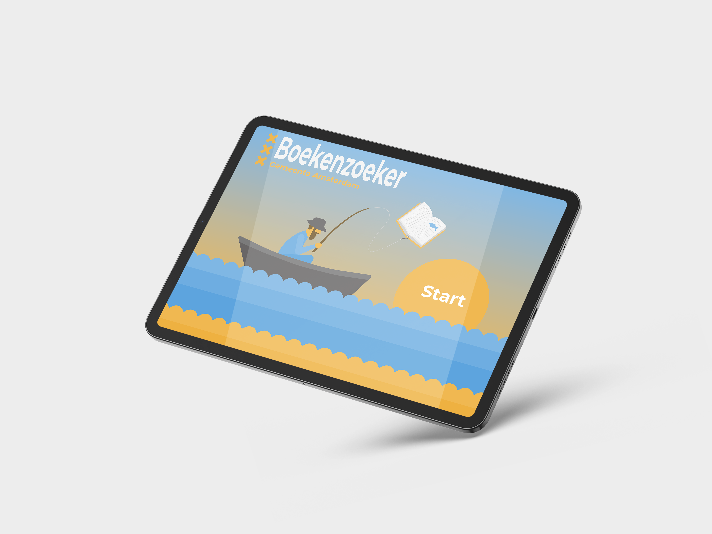
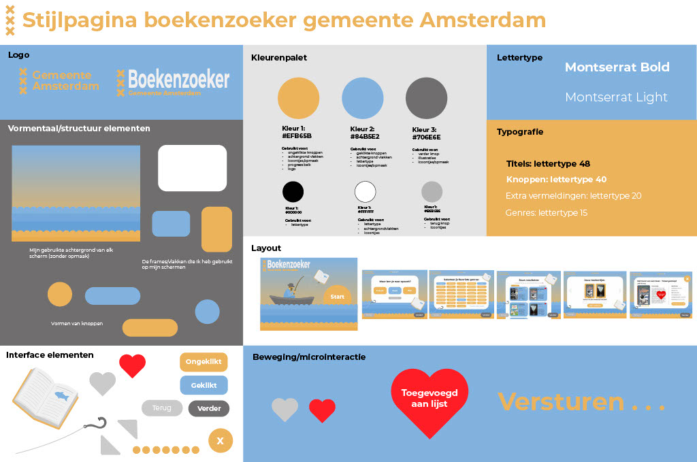

Homescreen
Op het startscherm van de Boekenzoeker-app wordt je meteen meegenomen in een speelse illustratie. Met één duidelijke startknop en een vrolijke visuele stijl weet elke leerling direct wat de bedoeling is.
Op deze interactieve boekenzoeker vind je snel een boek dat écht bij je past. Kies jouw voorkeuren, blader door de suggesties en stel eenvoudig een wishlist samen. Binnen een paar stappen heb je een lijst met boeken die je kunt mailen of printen – ideaal voor in de schoolbibliotheek!
Op het startscherm van de Boekenzoeker-app wordt je meteen meegenomen in een speelse illustratie. Met één duidelijke startknop en een vrolijke visuele stijl weet elke leerling direct wat de bedoeling is.
Door simpele vragen als “Waar ben je naar op zoek?” in te vullen, geeft de leerling zijn voorkeuren aan. Denk aan type boek (bijv. e-book of fysiek), of specifieke genres. De knoppen zijn groot en overzichtelijk, zodat elke keuze snel én intuïtief gemaakt kan worden.
Na het invullen van je voorkeuren krijg je een selectie van boeken te zien die bij jou passen. Die zet je eenvoudig op je boekenlijst. Met één klik stuur je die naar je mail—handig om later met je telefoon in de schoolbieb direct het juiste boek te vinden!
Het ontwerpproces begon met schetsen op papier. Dit gaf mij de ruimte om snel verschillende ideeën te verkennen en te testen hoe gebruikers door de app zouden bewegen.
Denk aan schermen voor het selecteren van genres, het bekijken van boekresultaten en het versturen van de boekenlijst.
Vervolgens heb ik de schetsen uitgewerkt tot een mid-fidelity prototype. In deze versie lag de focus vooral op de structuur en functionaliteit van de schermen.
Na het verzamelen van feedback en het uitvoeren van enkele tests, heb ik de ontwerpen verder verfijnd tot een high-fidelity prototype.
Hierin kwam de visuele stijl, de huisstijl van Gemeente Amsterdam en een intuïtieve interface samen tot een helder eindresultaat, klaar voor gebruik op de iPad in de schoolbibliotheek.
Een overzichtelijke en speelse applicatie die middelbare scholieren helpt om eenvoudig boeken te vinden die bij hun interesses passen.
Door stap voor stap voorkeuren aan te geven, zoals favoriete genres, leesniveau of of je leest voor je lijst, ontstaat een persoonlijke selectie van passende boeken.
De interface is ontworpen met helderheid en toegankelijkheid als uitgangspunt, afgestemd op jongeren tussen de 12 en 15 jaar.
Elke stap in het proces is intuïtief opgebouwd, met grote knoppen, duidelijke titels en visuele ondersteuning.
De gekozen boeken verschijnen overzichtelijk in een ‘boekenlijst’, die eenvoudig naar jezelf gestuurd kan worden via e-mail.
Zo kunnen leerlingen gericht op zoek in de schoolbibliotheek, zonder dat er een account nodig is.
Naast deze drie voorbeeldschermen zijn er nog veel meer ontwerpen gemaakt, verdeeld over verschillende iteraties.
Al deze schermen en de stappen in het proces zijn gebundeld in een PDF-bestand dat het volledige ontwerptraject laat zien; van schets tot interactieve oplossing.
Bekijk hieronder de stijlpagina van de boekenzoeker:
